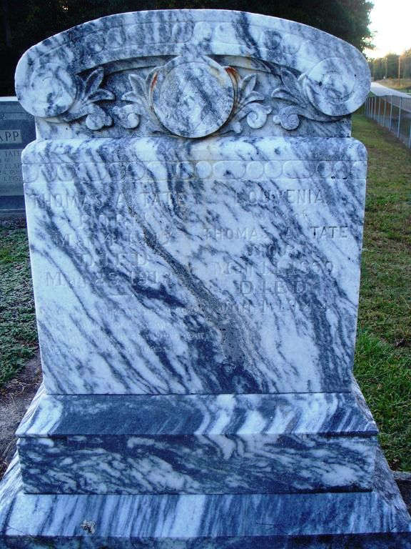

|
|
| 
Thomas Allen TATE (1847-1913) |
Thomas Allen TATE
Find A Grave, Memorial # 33273991 Thomas married Louvenia Grater "Vine" SOMERS, daughter of Jacob Franklin SOMERS and Mary Ann Paisley HANNAH, on 17 Oct 1872. (Louvenia Grater "Vine" SOMERS was born on 11 May 1850 in Alamance County, North Carolina, died on 1 Jan 1944 in Mebane, Alamance County, North Carolina and was buried in Stony Creek Presbyterian Church, Burlington, Alamance County, NC.) |
 Research Notes:
Research Notes: